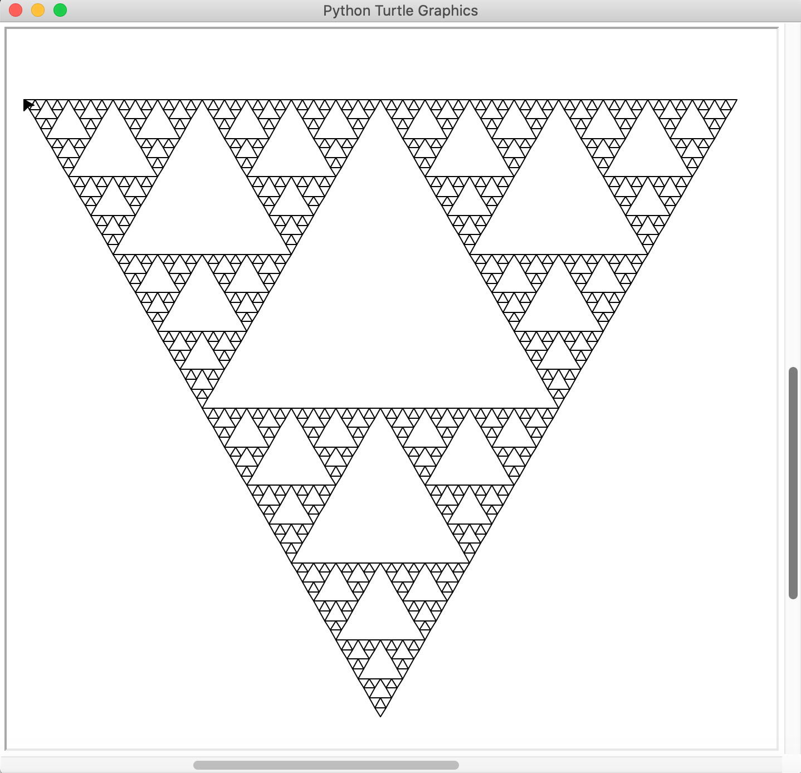

Voici mon projet python fait pendant les vacances.
Ce programme associe aux caractères 'F', 'G', '-' et '+' une valeur de lounguer ou d'angle et nous permet de creer des formes géométriques en utilisant des châines de caractères. Il est possible ainsi de créer des triangles de Sierpinsky (voir l'image) avec des manipulations de châines de caractères.
J'ai utilisé le corrigé du TP noté sur le site de mon professeur et je l'ai changé pour donner un algorithme permettant de créer un triangle de Sierpinski